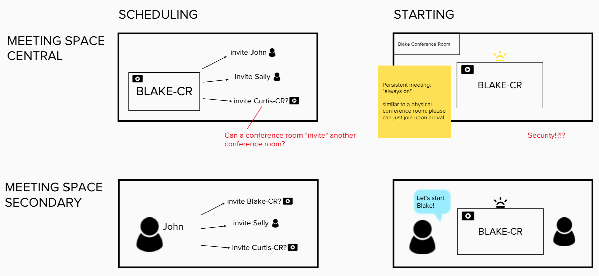

My Role
When ReadyTalk needed customer discovery to de-risk a new product idea, they turned to me.
An internal hackathon had lead to a high-level product concept: “turning on your in-room video conferencing platform should be as easy as turning on a TV”. The team had some ideas of what they wanted to build using beacons, but we needed to be sure it met customer needs and could be financially viable.
In addition to overseeing early customer validation and determining the MVP, I wrote the initial business case and implementation plan, including procurement and fulfillment. This was to be ReadyTalk's first foray into hardware, so new internal processes needed to be weighed in the investment decision.
Approach
Discovery
With over 10 years in the web conferencing space, we knew some of the pain points associated with conference room technology and starting and joining online meetings. We supplemented our existing knowledge with market research reports and meetings with analysts. We bought our competitors in-room solutions and set up labs across our offices to get used to them. And we remembered that not everyone is as passionate about conferencing as we are, so we used interviews and surveys to ensure we were honing in the value proposition and vernacular of our potential customers.
The product team already had well-established user personas for our product, but we needed to dig into understanding a different type of user for this product: the person who would be responsible for setting up and supporting the hardware. We went through an internal exercice developing an empathy map for IT buyers/managers, including bringing in our own Head of IT to speak with us about his values and needs when evaluating solutions. This had a LOT of benefits for the team, not only in designing solutions our customers would be comfortable buying, but just in understanding why IT always seemed to block simple requests! Once we had this initial empathy map, we continued to refer to it through our design and customer feedback sessions, to update or refine as we got more information.
As well, I did several rounds of client visits, to observe their existing spaces and practices.
As expected, the site visits were eye-opening. I visited tiny conference rooms where the meeting organizer would walk in with a borrowed projector and set it up facing a window, and vast open spaces with terrible acoustics. In one location, I was at first intimidated by the expensive professionally installed conferencing equipment, until I was told no one knew how to use it.
Design
We recognized early on that we had four key moments to address, and three personas to consider. We kept these in mind as we conducted our research and ideation, to ensure we weren't making unintentional tradeoffs.

The fundamental tension of this project was security versus convenience.
Was the conference appliance the central to the experience, or secondary? However we conceived the role of the appliance would impact the rest of the experience.
Testing
In the spirit of getting customer input as soon as we could, the first round of the prototype did not include scheduling. We wanted to be sure that we were on the right track with the experience to join and in-room experience.
Turns out, they liked it that way. Our "join" experience won them over in its simplicity, and scheduling may have only complicated the solution and deterred trial.
Allowing users to include the appliance in the meeting at the exact time they needed it gave them an immediate reward for their effort. It was contextual, and we could use cues in the meeting room to assist them in doing so. Compare this to scheduling in advance, when users would be expected to anticipate and prepare for something at a different location and time. It sounds silly, but scheduling forces the user to expend effort in advance, well apart from when they'll see the benefits of this. This can decrease trial and usage.
In all, we engaged in the following activities during this project:
- Qualitative interviews
- Targeted surveys (messaging/value proposition)
- Site visits with a workable prototype
- Analyst discussions
Bringing our prototype right into their space was invaluable.
It helped us design the product, and it helped the customer imagine a new way to work.
Highlights
Ease-to-install needed to be balanced with IT buyers’ security concerns
Simplicity was Key
The interaction was solid when we did a demo with a key stakeholder and his response was “that’s it?”! The experience was remarkably simple and elegant
Our target customer was a non-consumer: outfitting a new meeting space rather than trying to displace a more robust system like Cisco, Polycom or Lifesize
Our MVP features were more minimal than initially expected: peripheral activities like scheduling only complicated the solution and weren’t a requirement
The hardware was basically a commodity: we were better served making thin margins on the hardware and focusing on the UX/software
“Overall, the big selling point for us is the concept of the wireless approach for presentations in the meeting rooms. We have tried wireless projectors in the past with limited success. The concept of walking into a room and having everything start up is great, *IF* it can actually all work easily.”
- Senior IT Director
Outcomes
In December 2015 the business case was funded, and FoxDen Connect was launched in April 2016.
Messaging and positioning had already been market tested before a dedicated Engineering team was assigned to the project, dramatically lowering our risk.
Our early interviews also identified a lighthouse customer who was requesting pricing and wanted to sign a contract before we had officially green-lit the project.
FoxDen Connect served as a differentiator in our space, and opened the door to strategic partnerships that would not have been possible had we not launched a hardware product.